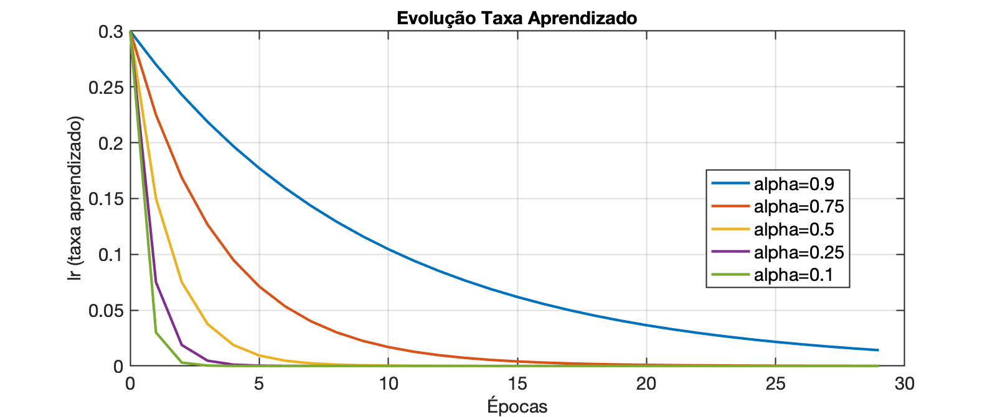

Algoritmos de Aprendizado no KerasComo indicar o algoritmo de aprendizado no Keras?Quais algoritmos de aprendizado estão disponíveis?Como modificar a taxa de aprendizado e o termo momentum?Existe suporte para Simulated Annealing?Como Simulated Annealing poderia ser aplicado em redes neurais?Implementando Simulated Annealing no KerasOutra abordagem: Adicionar ruído aos gradientesConclusãoExiste algum algoritmo que reduza a taxa de aprendizado e aumente o momentum automaticamente?Implementando taxa de aprendizado exponencialmente decrescenteImplementação no KerasExemplo de Evolução da Taxa de AprendizadoAlgoritmos similares com $\eta$ descrescente1. RMSprop e Adam (Momentum Suavizado)ExemplosCódigo Keras usando RMSpropCódigo Keras usando AdamExplicações sobre os códigosExemplo de Decaimento da Taxa de Aprendizado2. Exponential Learning Rate Decay3. AdaDelta e "No Learning Rate Decay"Observações finaisResumo
No Keras, o algoritmo de aprendizado é especificado na fase de compilação do modelo, utilizando o método .compile(). O parâmetro optimizer define qual algoritmo será usado para atualizar os pesos da rede.
Ao criar um modelo MLP, por exemplo, você pode definir o otimizador assim:
xfrom tensorflow import kerasmodel = keras.Sequential([ keras.layers.Dense(64, activation='relu', input_shape=(input_dim,)), keras.layers.Dense(64, activation='relu'), keras.layers.Dense(output_dim, activation='softmax')])model.compile(optimizer='sgd', loss='categorical_crossentropy', metrics=['accuracy'])No exemplo acima, o otimizador escolhido é o SGD (Stochastic Gradient Descent).
O Keras oferece os seguintes otimizadores:
SGD (Stochastic Gradient Descent)
Adam (Adaptive Moment Estimation)
RMSprop (Root Mean Square Propagation)
Adagrad (Adaptive Gradient Algorithm)
Adadelta
Adamax
Nadam (Nesterov-accelerated Adaptive Moment Estimation)
Cada otimizador aceita hiperparâmetros. No caso do SGD, por exemplo, você pode definir:
xxxxxxxxxxfrom tensorflow.keras.optimizers import SGDoptimizer = SGD(learning_rate=0.01, momentum=0.9, nesterov=True)model.compile(optimizer=optimizer, loss='categorical_crossentropy', metrics=['accuracy'])Neste exemplo:
learning_rate=0.01 define a taxa de aprendizado inicial.momentum=0.9 adiciona um termo de momentum.nesterov=True ativa o momentum de Nesterov.O verdadeiro conceito de Simulated Annealing (SA) envolve a adição de ruído controlado para escapar de mínimos locais, o que não é uma estratégia nativa dos otimizadores do Keras. Nenhum dos otimizadores padrão do Keras implementa essa abordagem explicitamente, mas existem algumas formas de simular esse efeito.
Em redes neurais, SA pode ser implementado de algumas formas, incluindo:
Nenhum otimizador padrão do Keras implementa a ideia diretamente, mas algumas abordagens próximas incluem:
A abordagem mais direta seria adicionar ruído na ativação dos neurônios das camadas ocultas. Podemos fazer isso adicionando uma camada Lambda que injeta ruído gaussiano:
xxxxxxxxxximport tensorflow as tffrom tensorflow import kerasimport tensorflow.keras.backend as Kdef noisy_activation(x, noise_std=0.1): noise = K.random_normal(shape=K.shape(x), mean=0.0, stddev=noise_std) return keras.activations.relu(x + noise)model = keras.Sequential([ keras.layers.Dense(64, activation=None, input_shape=(input_dim,)), keras.layers.Lambda(lambda x: noisy_activation(x, noise_std=0.2)), # Adiciona ruído keras.layers.Dense(64, activation=None), keras.layers.Lambda(lambda x: noisy_activation(x, noise_std=0.1)), keras.layers.Dense(output_dim, activation='softmax')])model.compile(optimizer='adam', loss='categorical_crossentropy', metrics=['accuracy'])O que esse código faz?**
Lambda para criar uma camada personalizada que adiciona ruído à ativação dos neurônios.Se quiser adicionar ruído diretamente ao processo de otimização, uma alternativa é criar um otimizador customizado que "perturba" os gradientes:
xxxxxxxxxxclass SimulatedAnnealingSGD(keras.optimizers.Optimizer): def __init__(self, learning_rate=0.01, noise_std=0.1, name="SimulatedAnnealingSGD", **kwargs): super().__init__(name, **kwargs) self.learning_rate = learning_rate self.noise_std = noise_std def apply_gradients(self, grads_and_vars, name=None): grads_and_vars = [(g + tf.random.normal(tf.shape(g), stddev=self.noise_std), v) for g, v in grads_and_vars] return super().apply_gradients(grads_and_vars, name)optimizer = SimulatedAnnealingSGD(learning_rate=0.01, noise_std=0.1)model.compile(optimizer=optimizer, loss='categorical_crossentropy', metrics=['accuracy'])O que esse código faz?**
Embora o Keras não tenha um otimizador nativo que implemente Simulated Annealing, podemos alcançar um efeito semelhante de duas formas:
Lambda com random_normal).Isso pode melhorar a capacidade da rede de escapar de mínimos locais.
O Keras não tem um otimizador que faça isso por padrão, mas isso pode ser implementado usando callbacks como LearningRateScheduler e ReduceLROnPlateau.
Exemplo de uma estratégia que reduz a taxa de aprendizado e aumenta o momentum:
xxxxxxxxxximport tensorflow.keras.backend as Kclass AdaptiveLRMomentumScheduler(keras.callbacks.Callback): def __init__(self, optimizer, init_lr=0.01, min_lr=1e-5, init_momentum=0.9, max_momentum=0.99): self.optimizer = optimizer self.init_lr = init_lr self.min_lr = min_lr self.init_momentum = init_momentum self.max_momentum = max_momentum def on_epoch_end(self, epoch, logs=None): new_lr = max(self.min_lr, self.init_lr * (0.85 ** epoch)) new_momentum = min(self.max_momentum, self.init_momentum + 0.01 * epoch) K.set_value(self.optimizer.lr, new_lr) K.set_value(self.optimizer.momentum, new_momentum) print(f"Epoch {epoch+1}: LR={new_lr:.6f}, Momentum={new_momentum:.3f}")optimizer = SGD(learning_rate=0.01, momentum=0.9)scheduler = AdaptiveLRMomentumScheduler(optimizer)model.compile(optimizer=optimizer, loss='categorical_crossentropy', metrics=['accuracy'])model.fit(x_train, y_train, epochs=50, callbacks=[scheduler])Esse callback:
max_momentum).Lembrado da eq. de diferenças de um filtro passa-baixas de primeira ordem e sua resposta a um impulso (exponencial decrescente), podemos tentar implementar uma rotina, que a cada vez que é chamada, reduz exponencialmente a taxa de aprendizado até um valor mínimo minimum_lr.
Podemos modelar a taxa de aprendizado com um decaimento exponencial semelhante à resposta ao impulso de um filtro recursivo (IIR) passa-baixas de 1ª ordem, que segue a forma:
No contexto da taxa de aprendizado, ficaria:
onde:
| Note que: | ||
|---|---|---|
| Se | taxa não muda(não há decaimento) | |
| Se | taxa mínima(não há decaimento) |
Podemos implementar essa atualização dentro de um Callback no Keras:
xxxxxxxxxximport tensorflow.keras.backend as Kimport tensorflow as tfclass IIRLearningRateScheduler(tf.keras.callbacks.Callback): def __init__(self, initial_lr=0.01, minimum_lr=1e-5, alpha=0.9): super().__init__() self.lr = initial_lr self.minimum_lr = minimum_lr self.alpha = alpha def on_epoch_begin(self, epoch, logs=None): # Atualiza a taxa de aprendizado como resposta ao impulso de um IIR passa-baixas self.lr = self.alpha * self.lr + (1 - self.alpha) * self.minimum_lr K.set_value(self.model.optimizer.lr, self.lr) print(f"Epoch {epoch+1}: Adjusted Learning Rate = {self.lr:.6f}")# Criando o modelo e aplicando o callbackmodel.compile(optimizer=tf.keras.optimizers.Adam(learning_rate=0.01), loss='categorical_crossentropy', metrics=['accuracy'])lr_scheduler = IIRLearningRateScheduler(initial_lr=0.01, minimum_lr=1e-5, alpha=0.9)model.fit(x_train, y_train, epochs=50, callbacks=[lr_scheduler])Explicação do Código
Callback IIRLearningRateScheduler
minimum_lr.alpha controla a suavidade da redução.Uso no Keras
model.fit(), e a taxa de aprendizado vai diminuindo exponencialmente a cada época.Se initial_lr=0.01, minimum_lr=1e-5, alpha=0.9, então:
| Época | Taxa de Aprendizado |
|---|---|
| 1 | 0.009009 |
| 2 | 0.008118 |
| 3 | 0.007306 |
| 10 | 0.004263 |
| 20 | 0.002043 |
| 50 | 0.000100 |
Isso simula a resposta ao impulso de um filtro passa-baixas de 1ª ordem, suavizando o decaimento.
Se quiser alterar a velocidade do decaimento, basta ajustar alpha! 🚀
O gráfico á seguir mostra a evolução da taxa de aprendizado se: minimum_lr=0,0001$:

O gráfico anterior foi criado com o script:
xxxxxxxxxx% Simulando taxa de aprendizado decrescente simulando resposta ao impulso% para filtro passa-baixas de 1a-ordem, ou tambpem dito filtro exponencial% Fernando Passold, em 19/03/2025initial_lr=0.3;minimum_lr=1e-4;alpha=[0.9 0.75 0.5 0.25 0.1];passos=30;clear x y% Calculando...k=length(alpha);x=0:passos-1; % inicializa eixo x = épocasfor l=1:k, aux=['alpha=',num2str(alpha(l))]; % criar vetor legendas msg(l,1:length(aux))=aux; lr(1)=initial_lr; y(1,l)=lr(1); for n=2:passos, lr(n)=alpha(l)*lr(n-1) + (1-alpha(l))*minimum_lr; y(n,l)=lr(n); endend% Gerando gráficofor l=1:k, plot(x,y(:,l)); if l==1 hold on end endlegend(msg)xlabel('Épocas')ylabel('lr (taxa aprendizado)')title('Evolução Taxa Aprendizado')A ideia de usar um decaimento exponencial da taxa de aprendizado semelhante a um filtro passa-baixas de 1ª ordem aparece em alguns algoritmos de otimização. Aqui estão algumas abordagens que já incorporam essa técnica (ou algo bem próximo):
RMSprop
O RMSprop foi introduzido por Geoffrey Hinton em suas notas de aula no Coursera, sem uma publicação formal revisada por pares. Não há um artigo oficial publicado. A referência mais próxima é:
Harvard Style:
Hinton, G. (2012) 'Neural Networks for Machine Learning', Coursera Lecture 6e.
BibTeX:
xxxxxxxxxx@misc{hinton2012rmsprop,author = {Hinton, Geoffrey},title = {Neural Networks for Machine Learning, Lecture 6e},year = {2012},note = {Coursera Lecture}}
Adam
Harvard Style:
Kingma, D.P. and Ba, J. (2015) 'Adam: A Method for Stochastic Optimization', International Conference on Learning Representations (ICLR).
BibTeX:
xxxxxxxxxx@inproceedings{kingma2015adam,title = {Adam: A Method for Stochastic Optimization},author = {Kingma, Diederik P. and Ba, Jimmy},booktitle = {International Conference on Learning Representations (ICLR)},year = {2015}}
Ano e Número de Citações:
Publicado em 2015. Este artigo é amplamente citado na literatura de aprendizado de máquina.
Tanto o RMSprop quanto o Adam utilizam um fator de amortecimento () que age como um filtro passa-baixas sobre os gradientes:
onde:
Isso faz com que a atualização dos pesos reaja lentamente às mudanças abruptas nos gradientes, funcionando como um filtro passa-baixas de 1ª ordem.
📌 Diferença:
Aqui está como ativar o aprendizado de uma MLP (Multilayer Perceptron) usando RMSprop ou Adam no Keras, com:
xxxxxxxxxximport tensorflow as tffrom tensorflow import keras# Criando a MLPmodel = keras.Sequential([ keras.layers.Dense(64, activation='relu', input_shape=(input_dim,)), keras.layers.Dense(64, activation='relu'), keras.layers.Dense(output_dim, activation='softmax')])# Callback para redução exponencial da taxa de aprendizado (IIR de 1ª ordem)class IIRLearningRateScheduler(keras.callbacks.Callback): def __init__(self, initial_lr=0.3, minimum_lr=1e-4, alpha=0.9): super().__init__() self.lr = initial_lr self.minimum_lr = minimum_lr self.alpha = alpha def on_epoch_begin(self, epoch, logs=None): self.lr = self.alpha * self.lr + (1 - self.alpha) * self.minimum_lr keras.backend.set_value(self.model.optimizer.lr, self.lr) print(f"Epoch {epoch+1}: Adjusted Learning Rate = {self.lr:.6f}")# Compilando o modelo com RMSpropoptimizer = keras.optimizers.RMSprop(learning_rate=0.3, rho=0.9)model.compile(optimizer=optimizer, loss='categorical_crossentropy', metrics=['accuracy'])# Treinamento com ajuste automático da taxa de aprendizadolr_scheduler = IIRLearningRateScheduler(initial_lr=0.3, minimum_lr=1e-4, alpha=0.9)model.fit(x_train, y_train, epochs=50, batch_size=32, callbacks=[lr_scheduler])Caso queira usar Adam ao invés de RMSprop, basta trocar o otimizador:
xxxxxxxxxxoptimizer = keras.optimizers.Adam(learning_rate=0.3, beta_1=0.9)model.compile(optimizer=optimizer, loss='categorical_crossentropy', metrics=['accuracy'])Otimizadores RMSprop e Adam
learning_rate=0.3 → taxa de aprendizado inicial. rho=0.9 (no RMSprop) e beta_1=0.9 (no Adam) → fator de amortecimento da média móvel dos gradientes. Decaimento Exponencial da Taxa de Aprendizado
IIRLearningRateScheduler(), que reduz lr de forma suave e adaptativa. Se initial_lr=0.3, minimum_lr=1e-4, alpha=0.9, o ajuste ocorre assim:
| Época | Taxa de Aprendizado |
|---|---|
| 1 | 0.27009 |
| 5 | 0.19779 |
| 10 | 0.14411 |
| 20 | 0.07836 |
| 50 | 0.01000 |
Isso ajuda a estabilizar o aprendizado e evitar mínimos locais ruins! 🚀
A técnica SGD com Decaimento Exponencial da Taxa de Aprendizado não possui um único artigo associado que introduza o SGD com decaimento exponencial da taxa de aprendizado, pois é uma técnica comum utilizada em diversos estudos. Geralmente, é mencionada em livros e tutoriais sobre aprendizado de máquina.
Alguns algoritmos aplicam decaimento exponencial diretamente na taxa de aprendizado:
Essa equação aparece em variantes como SGD com decaimento exponencial, porém ela não usa um filtro recursivo (IIR), e sim um decaimento direto. Nossa abordagem com filtro passa-baixas é mais suavizada e adaptativa.
O AdaDelta evita definir manualmente uma taxa de aprendizado inicial e ajusta automaticamente a escala de atualização dos pesos:
Aqui, a suavização é aplicada ao histórico de atualizações. Isso lembra a suavização exponencial que fizemos, mas é aplicada à magnitude dos gradientes em vez da taxa de aprendizado.
Referência:
Zeiler, M.D. (2012) 'ADADELTA: An Adaptive Learning Rate Method', arXiv preprint arXiv:1212.5701.
BibTeX:
xxxxxxxxxx@article{zeiler2012adadelta,title = {ADADELTA: An Adaptive Learning Rate Method},author = {Zeiler, Matthew D.},journal = {arXiv preprint arXiv:1212.5701},year = {2012}}
Ano e Número de Citações:
Publicado em 2012. Este artigo também é amplamente citado na literatura de aprendizado de máquina.
📌 Nenhum otimizador padrão implementa exatamente a estratégia que sugerimos (filtro IIR sobre lr[n]).
📌 Porém, algoritmos como Adam, RMSprop e AdaDelta usam suavização exponencial sobre gradientes, que tem um efeito parecido.
Se você quiser experimentar isso em um otimizador real, podemos tentar modificar um otimizador existente no TensorFlow e implementar nossa versão customizada! 🚀
O algoritmo de aprendizado é especificado na compilação do modelo (.compile(optimizer=...)).
Keras oferece otimizadores como SGD, Adam, RMSprop, Nadam, entre outros.
Você pode ajustar a taxa de aprendizado e o momentum manualmente ao configurar o otimizador.
Simulated Annealing pode ser implementado com LearningRateScheduler.
Um ajuste automático da taxa de aprendizado e momentum pode ser feito via callback personalizado.
Estudos Comparativos em Redes MLP Simples
Estudos que comparam métodos de otimização como RMSprop, Adam, SGD com decaimento exponencial da taxa de aprendizado e AdaDelta em redes MLP com 1 ou 2 camadas ocultas e funções de transferência sigmoide ou tanh são relativamente comuns. Esses estudos geralmente avaliam o desempenho dos otimizadores em termos de velocidade de convergência e precisão final.
19/03/2025